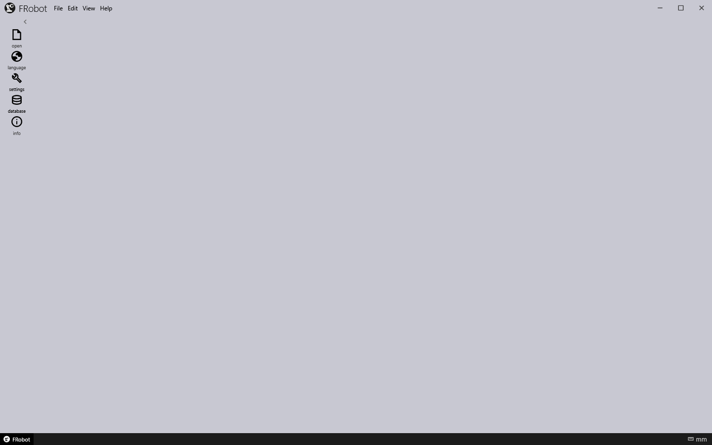

Getting started
Installing FRobot
-
Run the setup program, Setup.FRobot.<version>.exe, and follow its steps.
-
It needs administrator rights, and asks you to accept the licence agreement.
-
It installs FRobot into C:\Metamation\FRobot unless you choose another folder.
-
It can put an FRobot icon on the desktop.
-
The setup brings everything FRobot needs to run, including the .NET runtime.
-
-
At the end you can start FRobot straight away.
FRobot appears in the Start menu as FRobot.
What is installed
| Folder | What is in it |
|---|---|
Bin |
FRobot itself, and the settings it keeps between sessions |
robots |
The robot models: FanucX, LR10iA_10, M20iD_25 and M710iD_50M |
grippers |
The gripper catalog: the grippers, their suction cups and their priorities |
CellItems |
The cell-item library: pallets, centering tables, conveyors, a chute, a regripping station … |
Machines |
The machine library: the TruBend Center panel benders |
CellConfigs |
The saved cell configs, one folder per robot |
Samples |
Sample parts, solutions, grippers and cell components to try FRobot with |
Wad, Nori |
Pictures and other resources FRobot uses |
|
Note
|
A later setup does not overwrite CellConfigs, and uninstalling FRobot leaves it in place. The cells you saved are kept. |
|
Note
|
The post-processor that turns FRobot’s program into a FANUC program (RobotPost) is not part of the setup. Install it separately, then tell FRobot where it is: see Machine Defaults. |
Starting FRobot
Start FRobot from the Start menu or the desktop icon. Double-clicking a solution file (.fr) in Explorer also starts FRobot and opens that solution. FRobot registers the .fr file type the first time it starts, so this works from then on.
FRobot fills the whole screen, including the taskbar.
-
The Maximize button at the top right switches between the full screen and a smaller window.
-
Drag the title bar to move the window.
The start screen

FRobot opens with an empty 3D view.
-
The robot and its cell are already loaded, but hidden.
-
The robot is the one you used last; the very first time, it is FanucX.
-
The cell is that robot’s cell config named Default, if it has one. FanucX and M710iD_50M ship without one, so their cell starts empty.
-
Robot and cell appear when you open a cell config or a solution, or when Pick & Place Tech creates a solution.
-
-
The tool rail on the left offers only its entry tools: open, language, settings, database and info. More tools appear as you go: see The screen.
To begin, open a part’s drawing or a cell config with File ▸ Open… or the open button. Or follow Your first program.
The sample files
The Samples folder has files to learn FRobot with:
| Folder | What is in it |
|---|---|
Samples\SampleParts\2d |
Flat drawings: 2Fold.geo and 1000x1000Fold.geo (with bend lines), FRob_test.dxf, TATPart 1.dxf; and solutions made from them (.fr) |
Samples\SampleParts\fr |
Finished solutions (.fr) on different robots and cells, including cells with a machine and a cluttered cell |
Samples\SampleGrippers |
Two grippers to import: ConVac_270x200 and FCVac_6cup, each a mesh with its .DAT file |
Samples\SampleCellComponents |
A pickup pallet and a centering table to import, each a mesh with its .ini file |
|
Note
|
The two files in Samples\CellConfigs (.fcell) are in an old format that FRobot no longer opens. The cell configs you can use are in the CellConfigs folder. |
Where your work is kept
| What | Where |
|---|---|
Solutions (.fr) |
Wherever you save them |
Cell configs (.curl) |
CellConfigs\<robot>\<name>.curl in the installation folder |
Robot programs (.rbc) |
Output\<drawing name>.rbc in the installation folder |
FANUC programs (.LS) |
Next to the post-processor (RobotPost.exe), in a folder named after the part |
Your settings |
In Bin: the last robot, Home, the TCP and the mounted gripper, the panel positions and the Machine Defaults |
See Reference for the full list of settings files.